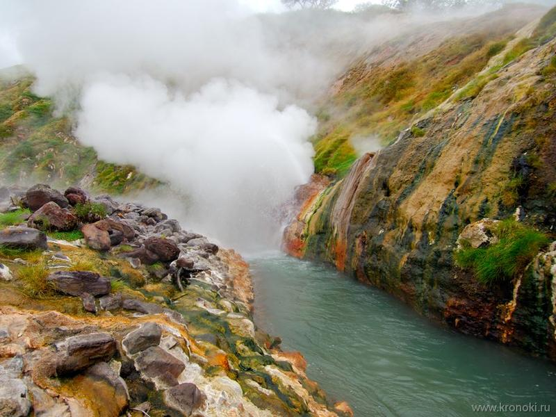

ОБЗОР
В мире известно всего четыре гейзерных поля: в Исландии, Новой Зеландии, Йеллоустонском национальном парке в США и на Камчатке. Камчатское — одно из самых больших гейзерных полей планеты и единственное на материке Евразия. Название «Долина Гейзеров» на самом деле неточное, официально это место именуется Долиной реки Гейзерной. Как она примерно выглядит, могут вспомнить даже те, кто никогда на Камчатке не был, но смотрел фильм «Земля Санникова», который здесь снимали в 1972 году.
Однако кино, конечно же, не может передать настоящего ошеломляющего впечатления от вида этого вулканического каньона. В Долине находится около 20 крупных гейзеров и множество источников, периодически выбрасывающих фонтаны почти кипящей воды и горячего пара. Температура воды в Гейзерной даже в январе не опускается ниже 19 градусов.
История открытия Долины сама по себе напоминает кино. В апреле 1941 года гидролог Кроноцкого заповедника Татьяна Устинова и проводник-ительмен Анисифор Крупенин поднялись по руслу реки Шумной и остановились в узком проходе между скалами, неподалеку от устья неизвестного притока. Решили отдохнуть и перекусить. На противоположном берегу реки виднелась протаявшая каменистая площадка, над которой вился легкий пар. Внезапно из этой проталины ударила фонтаном струя горячей воды. Этот гейзер Устинова позже назвала Первенцем. Летом 1941 года она завершила обследование долины и дала название двум десяткам крупных гейзеров и термальных источников.
-

Фотоальбом
Долина представляет собой восьмикилометровый вулканический каньон шириной всего 4 и глубиной 400 метров. Экскурсионная тропа проложена по центру долины. Вообще-то с туризмом, несмотря на огромную популярность Долины, дело обстоит сложно. С 1977 по 1993 год он был просто запрещен. В 1993-м каньон открыли для посещения, создав необходимую инфраструктуру, но самостоятельный доступ туда строго ограничен. В 2007 году глава Федерального агентства по туризму Владимир Стржалковский просил президента об увеличении квоты на посещение Долины. На что получил ответ: «Это решение должно быть основано исключительно на мнении экспертов». Пресса трактовала его как отказ.
Сложнейшая система Долины не раз менялась под влиянием стихий. 4 октября 1981 года над Камчаткой пронесся тайфун «Эльза». Он вызвал обильные дожди, и уровень воды в реке Гейзерной поднялся на несколько метров. Вспучившийся поток грязи тащил по руслу трехметровые валуны и камни, сокрушая все на своем пути. Исчезли многие источники. Прекратил существование гейзер Большая Печка. Получил серьезные повреждения источник Малахитовый Грот.
3 июня 2007 года на Долину гейзеров сошел мощный оползень. В результате селевой поток перекрыл реку Гейзерную, образовалось озеро Гейзерное, несколько гейзеров оказались засыпанными или затопленными. В качестве своеобразной компенсации появился новый гейзер с высотой выброса воды около 5 метров. Кроме того, после оползня обнажились участки изумительной разноцветной земли — сочетание голубой и красной глины.
Долина гейзеров является частью объекта Всемирного наследия ЮНЕСКО «Вулканы Камчатки».
ВАЖНО
В Долину Гейзеров сейчас можно попасть только в составе организованной группы, на вертолете. Для туристов оборудованы деревянные пешеходные настилы. Группы сопровождают гид и инспектор заповедника.
МЕСТНЫЕ ОСОБЕННОСТИ
Регулярные экскурсионные рейсы в Долину совершаются в летне-осенний период. Общая продолжительность экскурсии — 5–6 часов, из них около 2,5 часов — перелет, нахождение на маршруте — 1,5–2 часа. В стоимость входит обед. Регулярные экскурсионные рейсы совершаются в летне-осенний период.
Климат и погода На территории Кроноцкого заповедника климат морской, лето короткое, прохладное и дождливое, зима мягкая и многоснежная, часты ветры и штормы. Средняя температура августа составляет +12 °С (максимальная +24 °С), средняя температура февраля –7 °С (минимальная опускается до –25 °С).